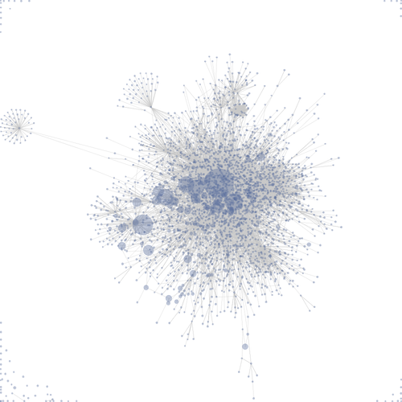

A very simple force diagram could be used to create large scale family trees with the added ability
to interact with the nodes (i.e. mouseover). Using a force diagram allows for simplicity when implementing
new data and easier visualization as the diagram gets larger and larger.
Another example is seen on the Wikipedia page for
Force-directed graph drawing. The force diagram shows the connectivity of links on a webpage and where
they branch to. 
Force diagrams can also be used to show the relationships between people on websites like Facebook.
Mutual friends are easily visibile using this type of graph.